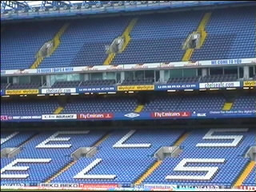
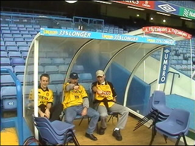
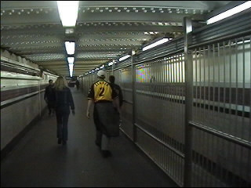
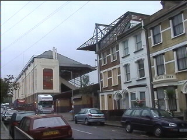
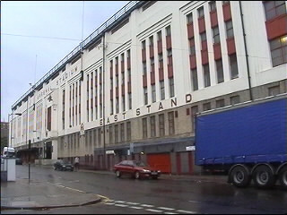
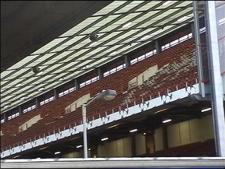
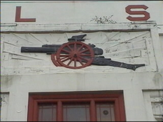
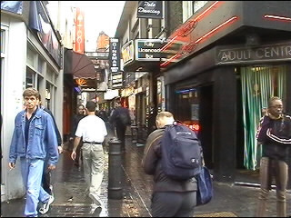
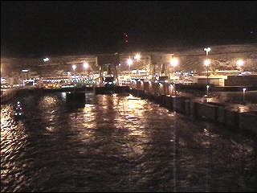
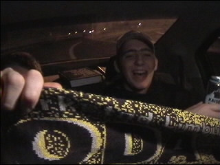

| Rodafans on tour Charlton Athletic (13-14-15 oktober 2001) |

Als Roda het redt tegen Macabi en Chelsea tegen Hapoel, dan is
Chelsea onze mogelijke tegenstander in de derde ronde UEFA-cup!

De dug-out voor de gasten.

Metrostation Arsenal; let op de hekken!

Ook het Arsenal-stadion ligt temidden van een woonwijk.

Een heel apart stadion. Zwaar gedateerd maar met een eigen
identiteit. De traditie straalt er vanaf.

The day before Arsenal-Panathinaikos. Een doorkijkje op de
oosttribune.

Het wapen van de "Gunners".

Soho, zeg maar de Wallen van London. De hoer uiterst rechts
maakte nogal wat heisa over deze opname.

We zijn alweer in Dover. Bye bye England.

Nu is het nog 3 uur rijden naar K-town. Hier zijn we nog fris en vrolijk,
maar de man met de hamer begint langzaam toe te slaan.
Het was een prachtige Engeland-trip en we zullen zeker naar The Valley
terugkeren, maar onze Engelse vrienden zullen eerst een Roda-wedstrijd
komen bezoeken. De parallellen van Charlton Athletic met Roda JC zijn frappant.
Allebei "gewone" clubs die ervoor moeten knokken, maar met een hele fijne
kern van echte supporters die hun ploeg door dik en dun steunen. Forza Roda JC,
Forza Charlton Athletic!!!!!!!